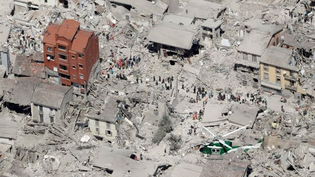
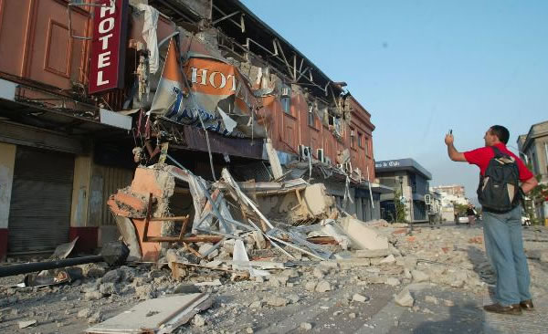

Post-Earthquake Rescue Operation
Casualty Examples

Tanzania Earthquake Kills 11, Injures Nearly 200

Tanzania earthquake kills 11, injures nearly 200 by Faith Karimi, CNN. Updated 3:26 AM ET, Sun September 11, 2016.
A 5.9-magnitude earthquake hit northwestern Tanzania, killing 11 people and leaving dozens injured, state media reported.
At least 192 people were injured when the quake struck near Nsunga town Saturday, according to Daily News Tanzania.
It hit near the shore of Lake Victoria, the US Geological Survey said. The tremors rippled as far as western Kenya and
parts of Uganda, both of which share the waters of Lake Victoria.
Click
HERE
for the full story
Myanmar Earthquake Kills Three, Damages Scores of Ancient Temples

Myanmar earthquake kills three, damages scores of ancient temples By Shwe Yee Saw
Myint and Wa Lone, Reuters. Updated 3:26 AM ET, Wed August 26, 2016.
A powerful earthquake shook central Myanmar on Wednesday, killing at least three people including two children, and
damaging scores of centuries-old Buddhist pagodas around the ancient capital of Bagan. The 6.8 magnitude quake
shook buildings across the Southeast Asian country, with tremors felt as far away as Thailand - where witnesses
reported high rise towers swaying in Bangkok - Bangladesh and eastern India.
Click
HERE
for the full story
Italy earthquake: Death toll passes 240 as rescue efforts continue

Italy earthquake: Death toll passes 240 as rescue efforts continue BBC, August 24, 2016.
Dozens of people are believed trapped in ruined Amatrice, Accumoli and Pescara del Tronto, in mountainous central Italy. There
have been hundreds of aftershocks since the quake struck, hampering relief efforts and damaging already unstable buildings.
More than 4,300 rescuers are using heavy machinery and their bare hands.
Click
HERE
for the full story
Chile Earthquake: Deadly Magnitude-8.2 Temblor Rocks Coast

Chile Earthquake: Deadly Magnitude-8.2 Temblor Rocks Coast Julmary Zambrano, Becky Bratu,
Carlo Dellaverson and Jason Cumming of NBC News, Reuters and The Associated Press contributed to this report.
A massive earthquake struck off the coast of Chile late Tuesday killing at least six people, triggering a six-foot tsunami
and sending 900,000 fleeing to "safe zones." The magnitude-8.2 temblor struck roughly 62 miles northwest of the port city
of Iquique and was shallow at 12.5 miles below the seabed, according to the U.S. Geological Survey.
Click
HERE
for the full story